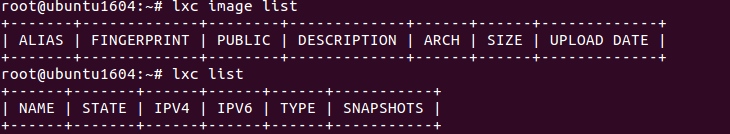
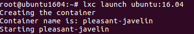
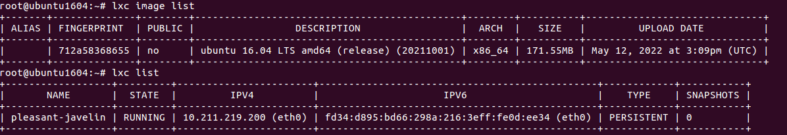
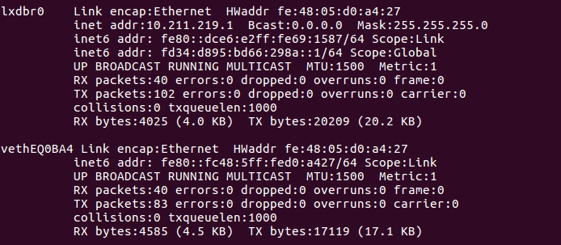

Configure Dockers and LXD
Create user and add it to lxd groupsudo -i #to become root
adduser daniele
apt install lxd
id daniele
Check that for now we do not have no images and no containers
 To check if everything is working we can create a ContainerCreate a container using lxc. Here we are creating a container for “ubuntu:16.04”
  Bibliograhy:https://www.hackingarticles.in/lxd-privilege-escalation/